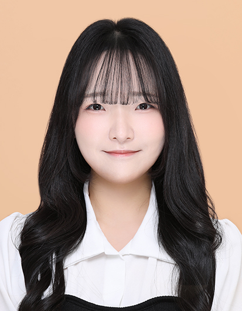

현재 캐시워크에서 iOS · Android · Web을 검증하고 있는 QA 엔지니어입니다. 보안 솔루션과 학습 서비스를 거치며 재현 · 분석 역량을 쌓았고, 수동 회귀 검증을 Appium 자동화 프레임워크로 옮겨 GitHub Actions CI까지 직접 구축했습니다.

정상 동작처럼 보이는 특이사항을 환경 변수 기반으로 반복 확인해, 재현 조건까지 도출합니다.
기획서에 정의되지 않은 엣지 케이스까지 체크리스트로 구조화해 검증 범위를 넓힙니다.
기능이 정상이어도 사용자 경험 관점에서 문제를 판단하고 개선 방향을 도출합니다.
단순 기능 나열이 아니라 사용자 흐름을 기준으로 항목을 나누고, 어떤 조건에서 검증했는지까지 함께 기록합니다.
환경에 따라 결과가 달라지는 보안 옵션은, 환경 조건과 기대 결과를 묶어 비교 가능하게 정리합니다.
개발자가 바로 재현할 수 있도록 절차를 단계별로 작성하고, 로그 · 캡처를 함께 정리합니다.
수동 회귀 검증을 자동화로 옮기기 위해, 실제 앱(SauceLabs My Demo App)을 대상으로 레이어를 분리한 POM 프레임워크를 직접 설계한 프로젝트. 로그인부터 결제까지 6개 화면을 E2E로 검증합니다.
정상 동작처럼 보이지만 검증이 불가능한 상태를 포착해, 재현 가능한 문제로 전환한 경험. (nProtect AppGuard — 금융 · 게임 다수 고객사 탑재 보안 솔루션)
| 항목 | Before | After |
|---|---|---|
| 검증 상태 | 확인 불가 | 검증 가능 |
| 이슈 상태 | 원인 불명 | 원인 특정 |
| 대응 | 분석 불가 | 개발팀 전달 |
기획서만 있고 검증 기준이 없던 상태에서, 테스트 가능한 검증 구조를 설계한 경험. (태블릿 코딩 학습 앱 · 신규 런칭)
반복 플레이로 난이도 체감이 어려워진 상황에서, 유저 데이터로 문제를 구체화해 개선안을 도출하고 최종 빌드에 반영한 경험. (Unity 모바일 게임 · 개발 + QA 병행 · 8인팀)
체크리스트 4축 설계(기능 · 시나리오 · 환경 · 정책), 엣지 케이스 도출, 시나리오 기반 검증 구조 설계
재현 절차 설계, 로그 분석, 원인 추적, 멀티 OS 비교 검증
Redmine · Jira — 재현 절차 및 로그 기반 이슈 등록 · 관리
ISTQB CTFL (2025.03) · 컴퓨터공학 전공